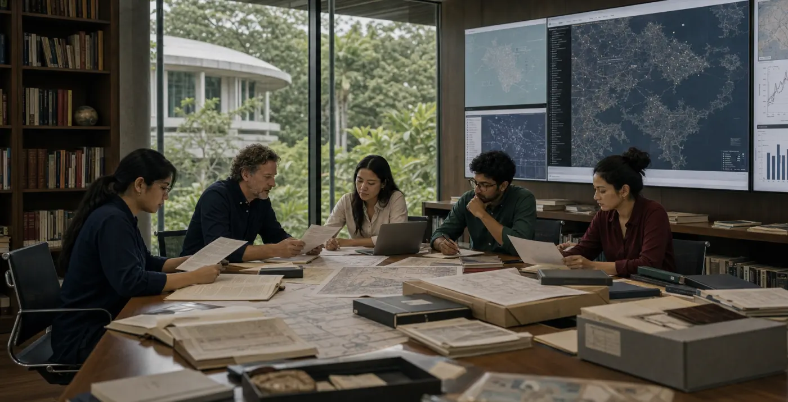
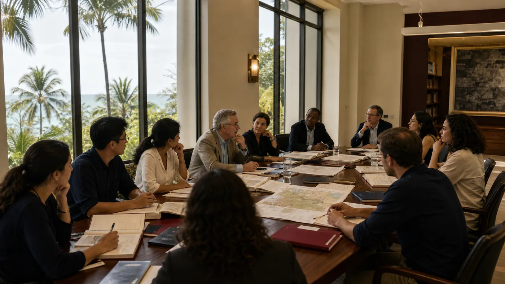

Research at Future Citizen University.未来公民大学的研究。
Research at FCU is organised through the University's five faculties, doctoral pathways and shared academic commons — connecting rigorous inquiry with the public questions of the digital age.FCU 的研究由五大学院、博士路径与共同的学术空间组织起来，把严谨探究同数字时代的公共问题连接起来。
A university research culture built across faculties.跨学院建立的大学研究文化。
The University's research culture is not separated from teaching. Students encounter research through seminars, methods training, supervised projects, doctoral progression and faculty-led inquiry into governance, technology, economy, society and design.大学的研究文化并不与教学分离。学生通过研讨课、方法训练、导师指导项目、博士进阶以及学院主导的治理、科技、经济、社会与设计研究进入研究实践。
Questions问题
Research begins with questions that are academically serious and publicly consequential.研究始于具有学术严肃性与公共重要性的问题。
Methods方法
Students learn to work with evidence, data, interpretation, field knowledge and written argument.学生学习处理证据、数据、解释、领域知识与书面论证。
Supervision导师指导
Advanced inquiry is structured through supervisors, milestones and scholarly review.高阶探究通过导师、里程碑与学术审阅形成结构。
Contribution贡献
Research is directed toward original insight, professional practice and public value.研究指向原创洞见、专业实践与公共价值。
Research organised around the systems that shape the digital age.围绕塑造数字时代的系统组织研究。
Each theme has a disciplinary home, but the University's research culture is intentionally interfaculty: governance questions meet technical systems, economic models meet institutions, and human development meets design and public meaning.每个主题都有学科归属，但大学的研究文化有意跨越学院：治理问题与技术系统相遇，经济模型与机构相遇，人类发展与设计及公共意义相遇。
Digital governance and public institutions数字治理与公共机构
Regulation, law, identity, legitimacy, public administration and institutional trust.监管、法律、身份、合法性、公共行政与机构信任。
Computing, AI and resilient infrastructure计算、AI 与韧性基础设施
Intelligent systems, data infrastructure, cybersecurity, distributed systems and responsible computation.智能系统、数据基础设施、网络安全、分布式系统与负责任计算。
Future economy, finance and enterprise未来经济、金融与企业
Digital economy, financial innovation, entrepreneurship, investment systems and organisational strategy.数字经济、金融创新、创业、投资系统与组织战略。
Leadership, ethics and human development领导力、伦理与人类发展
Leadership, psychology, ethics, social development and the human capabilities required by complex systems.领导力、心理学、伦理、社会发展，以及复杂系统所需的人类能力。
Design, media and public narrative设计、媒体与公共叙事
Communication, interface, institutional narrative, media systems and how public meaning is made.传播、界面、机构叙事、媒体系统，以及公共意义如何形成。
Interfaculty systems research跨学院系统研究
Work that connects evidence across faculties and studies problems that no single discipline can hold alone.连接各学院证据，研究任何单一学科都无法独自承载的问题。
From research training to original contribution.从研究训练到原创贡献。
The University's research routes make progression visible: research methods and supervised inquiry at Master's level, professional doctorates grounded in practice, and PhD research that contributes original knowledge.大学的研究路径使进阶清晰可见：硕士阶段的方法训练与导师指导探究，立足实践的专业博士，以及贡献原创知识的 PhD 研究。
MRes研究型硕士
A route for students preparing for doctoral study, research careers or advanced analytical work.面向准备进入博士学习、研究职业或高阶分析工作的学生。
Professional Doctorate专业博士
Doctoral-level inquiry for senior practitioners working on consequential problems of professional practice.面向资深实践者，研究具有重要性的专业实践问题。
PhD哲学博士
Independent research that advances a field and is examined through thesis and viva voce.推进特定领域的独立研究，通过论文与口试答辩接受评审。
Research is sustained by spaces, routines and exchange.研究由空间、流程与交流持续支撑。
A research university is built through recurring academic practices: seminars, reading groups, methods workshops, supervision meetings, public lectures and partnership conversations. These routines give research a visible institutional life.研究型大学由持续发生的学术实践建立：研讨会、阅读小组、方法工作坊、导师会议、公共讲座与合作对话。这些流程赋予研究以可见的机构生命。
Seminars研讨
Scholarly exchange develops careful argument and critical judgement.学术交流培养审慎论证与批判判断。
Methods workshops方法工作坊
Students learn how to design research and evaluate evidence.学生学习如何设计研究并评估证据。
Supervision meetings导师会议
Research direction is refined through sustained academic guidance.研究方向通过持续学术指导不断打磨。
Partnership exchange合作交流
Institutional partners help connect inquiry with public and professional questions.机构伙伴帮助研究连接公共与专业问题。


Research that strengthens institutions and public life.强化机构与公共生活的研究。
FCU's research culture is oriented toward serious scholarship and responsible public contribution. Its questions are academic, but their significance extends to institutions, professions, civic systems and the societies they serve.FCU 的研究文化同时面向严肃学术与负责任的公共贡献。其问题是学术性的，但其意义延伸至机构、专业、公共系统以及它们所服务的社会。